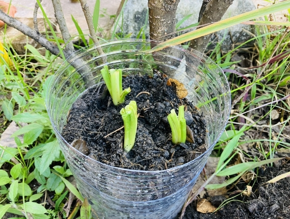
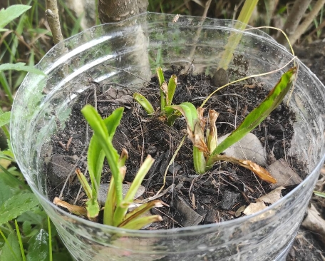
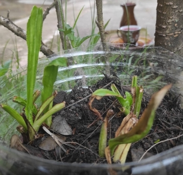
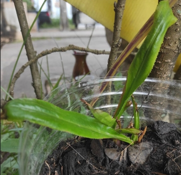

ชื่อ วิทยาศาสตร์
Erybgium foetidum L.
และจัดอยู่ใน วงศ์ Apiaceae
การงานอาชีพและเทคโนโลยี ป.3
หน่วยการเรียนรู้ที่ 2
ปลูกผักสวนครัว ชื่อ ผักชีฟรั่ง
ผักชีฝรั่ง
เป็นพืชล้มลุก มีถิ่นกำเนิดในทวีปอเมริกาใต้และประเทศเม็กซิโก และต่อมามีการนำไปปลูกแพร่หลายในเขตร้อนของประเทศต่าง ๆ สำหรับประเทศไทยมีการปลูกกันแพร่หลายทั่วทุกภาค ผักชีฝรั่งมีกลิ่นหอมเพาะตัวที่โดดเด่นและสรรพคุณมากมายแตกต่างจากผักชนิดอื่น ๆ เป็นที่ชื่นชอบของใครหลายๆคนนิยมนำมาประกอบอาหาร มีชื่อเรียกแตกต่างกันไปตามท้องถิ่น เช่น ผักชีดอย หอมป้อมกุลา หอมป้อมเป้อ (เชียงใหม่ ภาคเหนือ) มะและเต๊าะ (กะเหรี่ยง แม่ฮ่องสอน) ผักหอมเทศ ผักหอมเป (เลย ขอนแก่น) หอมป้อม หอมเป (ชัยภูมิ) นอกจากนี้ผักชีฝรั่งในพื้นที่จังหวัดเดียวกันบางแห่งก็เรียกต่างกันไปอีก เป็นต้น
• ชื่อ : ติณณ์ ไพศาลวัชรเมธี
• เลขที่ : 11 ห้อง ป.3/1
• คุณครูประจำชั้น : ครูณัฐริณีย์ มุขประเสริฐ
• เริ่มทำการปลูกผักสวนครัว 27 สิงหาคม 2565
วิธีการปลูก
• ใช้บริเวณโคนของผักชีฟรั่งที่โดนตัดทิ้ง ประมาณ 2 นิ้วจากโคน
• วางในที่แดดส่งถึงรำไร
• เมื่อใบยาวสามารถตัดเฉพาะส่วนใบนำไปประกอบอาหาร ต้นในกระถางรอให้งอกใหม่ได้เรื่อย ๆ>>>
คุณค่าทางโภชนาการหรืออาหารส่วนที่กินได้ของผักชีฝรั่ง 100 กรัม
ให้พลังงาน 32 กิโลแคลอรี/โปรตีน 24 กรัม/ไขมัน 0.4 กรัม /คาร์โบไฮเดรต 4.6 กรัม/แคลเซี่ยม 21 มิลลิกรัม/ฟอสฟอรัส 22 มิลลิกรัม/เหล็ก 2.9 มิลลิกรัม/วิตามิน บี 1 0.31 มิลลิกรัม/วิตามิน บี 2 0.21 มิลลิกรัม/ไนอาซิน 0.7 มิลลิกรัม/วิตามิน ซี 38 มิลลิกรัม
----------------------------------------------
บันทึกผลการปลูกผักสวนครัว
|  |  |  |  |
|---|---|---|---|
| วันที่ : 27/08/2565 | วันที่ :05/09/2565 | วันที่ : 07/09/2565 | วันที่ : |
| ความสูง : 2 เซนติเมตร | ความสูง : 4 เซนติเมตร | ความสูง : 7 เซนติเมตร | ความสูง :14 เซนติเมตร |
| หมายเหตุ : เริ่มทำการปลูกผักสวนครัว ใส่ดินเพิ่มจากในรูปด้านบน 10 เซนติเมตร | หมายเหตุ : | หมายเหตุ : รดน้ำพรวนดิน เก็บความยาวเพิ่ม | หมายเหตุ : ตาย 1 ต้น เหลือ 2 ต้น ย้ายจากกระถางลงพิ้นดินทั่วไป |
 |
 |
 |
|
|---|---|---|---|
| วันที่ : | วันที่ : | วันที่ : | วันที่ : |
| ความสูง : | ความสูง : | ความสูง : | ความสูง : |
| หมายเหตุ : | หมายเหตุ : | หมายเหตุ : | หมายเหตุ : |
PSVMT : ไพศาลวัชรเมธี